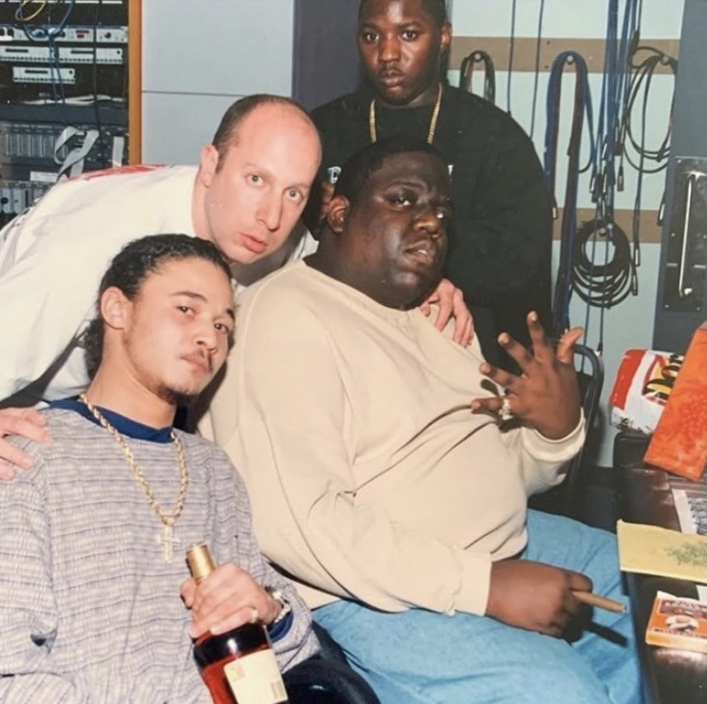

Track 04 · Jack Lobel
Steve Lobel is a longtime hip hop manager who has worked with dozens of iconic artists, from Bone Thugs-N-Harmony to Missy Elliott. In an original interview, Lobel reflects on his work with artists and producers with religious backgrounds different from his own. Lobel's account reveals that his interfaith professional relationships in the hip hop industry depend heavily on having two things in common: commercial interests and values. Interestingly, the tracks that have come as a direct result of his work — especially his efforts to unite different artists for music collaborations — contain lyrics that draw from themes of both religion and money.
"Notorious Thugs" is the opening track of the second disc of Life After Death, The Notorious B.I.G.'s second studio album, released 16 days after his murder in 1997. The track features Bone Thugs-N-Harmony, a hip hop group that Lobel has represented. The lyrics include multiple religious references, including when Layzie Bone says that he is "comin' in the form of scripture," and when Bizzy Bone raps: "My Messiah's better get ready for Armageddon, shit;s expired / It's wild, bless the child, the one that became a man." Yet, the rappers also discuss money, as in when Biggie says "Cash Rules Everything Around Me," a reference to the Wu-Tang Clan's hit "C.R.E.A.M."
Bizzy Bone, a member of Bone Thugs-N-Harmony, recalls the story behind the group's collaboration with The Notorious B.I.G. on "Notorious Thugs." When asked how the track came together, he answers: "It was a P. Diddy and Steve Lobel thing. They put it together."

This image shows Lobel in the recording studio with The Notorious B.I.G., Lil' Cease, and Bizzy Bone. Lobel notes that the photo was taken during a 1996 session he arranged for the studio recording of "Notorious Thugs."
Instagram ↗While Bizzy Bone of Bone Thugs-N-Harmony is rumored to have some Jewish ancestry, his 2001 song "Jesus" makes clear his belief in Christianity. "Don't Jesus make you feel good," the song's chorus asks repeatedly.
This track, featuring Bone Thugs-N-Harmony, was released in 2018 on Wiz Khalifa's sixth studio album, Rolling Papers 2. The title and lyrics "reach for the stars" signal ambition but also could allude to their aspiration to reach the heavens or a godlike status. Wiz raps in the first verse: "Everyday gotta thank God again. / Money really ain't no problem," suggesting that financial success and faith go hand-in-hand.
Wiz Khalifa recalls three phone calls with Lobel, including when Lobel told him that Bone Thugs-N-Harmony was interested in working with him on a song. Wiz describes it as a dream come true, given his longtime admiration of the hip hop group, to collaborate on what became "Reach for the Stars." Interestingly, the interview shows how a Jewish manager helped unite artists with ties to Christian and Muslim faiths.
This video, posted in 2018, shows Lobel smoking in a recording studio with Wiz Khalifa and Bone Thugs-N-Harmony. This was likely filmed as the artists recorded their collaboration "Reach for the Stars," which was released that year. Wiz passing the blunt to Lobel is a symbol that their relationships are not entirely professional but social, too.
The artist Mann reinforces the theme of the shared pursuit of money in his 2011 hit single "Buzzin'." In the music video for the remix, which features 50 Cent and cash raining down on female dancers, Lobel is briefly shown dapping up Mann at 2:05. As he raps about making money selling records, Mann says: "Taught the game by Steve Lobel / So we always win, don't receive no L's."
The Los Angeles Magazine article describes a Black-Jewish Entertainment Alliance panel discussion at the Recording Academy offices. The event encapsulates a theme Lobel expresses in the interview — that once establishing bonds based on common commercial pursuits and values, they share their religious practices, too. As made evident by the panel, they aim to replicate this interfaith engagement in the broader hip hop community.
Los Angeles Magazine ↗The Rolling Stone article highlights Lobel's role in Bone Thugs-N-Harmony's commercial ventures as an example of the consequences of their interfaith professional relationship. The story also shows the group's participation in a marketing campaign, and the hesitancy of one of the members towards the stunt.
Rolling Stone ↗The scene is an exemplary portrayal of interfaith collaboration in the music industry, showing Lobel at We The Best Studios alongside DJ Khaled, Nipsey Hussle, Mann, and the Runners. Also in the video, the artists highlight their expectations for commercial success with the music they are producing.
DOC-001 · Transcript · March 30, 2026
Note: This transcript has been edited for length and clarity.
Jack
Alright, so let's do this. So it's a group project. We're talking specifically about value and values in hip hop. So value meaning mainly commercialization and money. And values, encompassing religion, but also how people's different backgrounds, what people grew up with. So if you want to start by just talking about the relationship between values — you can take it in whatever sense of the word — and money, throughout your career. Because I think other people might go in one direction, but I actually sense that we could take a different direction. What first comes to mind when you think about that?
Steve
Tell me the final when you're done, I want to see how it came out.
Jack
I will.
Steve
When you say values, the first thing that comes to Steve Lobel's mind is principles, morals, integrity, loyalty, and respect. Because in hip hop, you have to have those elements, and unfortunately, most people don't. But I was brought up like that, and I carried it on into the hip hop, or the culture, or the music business, should I say. The value — when I started, I didn't know the value when it comes to financial value. And I had to learn as I grew, because when I started in the 80s with Run DMC and Jam Master Jay, it wasn't about money. But decades later, I learned that it's valuable as far as financial — publishing, ancillary, neighboring rights, royalties, splits, advances, commissions, management, agent, business manager, financials of the values, touring, merchandise. So again, when I started, it wasn't about money, it was for the love and passion. And I learned that it could be a valuable business, where it could be a lucrative business, if you know what you're doing. But I'll still go back to my values of life. If I wasn't a loyal person, then I'd probably have a lot more money and work with a lot more artists, but my integrity, my loyalty gets me to a certain limit where I can't top it off because I'm not for sale and I won't sell my soul for a check and I won't go against my integrity.
Jack
So are those two in contest sometimes? Do they contradict each other — values and value?
Steve
Depend on the type of person you are. Like again, I say money comes and goes, but history stays. So if you keep making history, you're going to make money. So that's valuable. And there's value in that, but also, you know, value meaning like again, the integrity and the principles and the morals. So to me, I would say in the music business, a lot of people don't look at it the way I look at it, and some do. It's just the way you were raised, the way you were brought up. Some people are just very greedy and don't care, and they just care about the money, the money, the money. So I look for value in everything — an artist I'm going to work with, a producer I'm going to work with, a record label I want to partner with, an agency I'm going to tour with, a lawyer I hire. I look for value and values in people. And things. In businesses.
Jack
Can you think of, or explain, a time when you did kind of turn down something of commercial value because it went against your values or how you were brought up?
Steve
Yeah, I think I gave you a great answer but that's another great question. Look, I get it. I'm not going to say names, but I've walked away from artists because they didn't have the same values as me — the work ethic, the loyalty and respect. You know, you could have a great artist that could be hot at the moment. But if they're putting everybody against each other, or they don't respect the team — which, there's no I in team; team means together, everyone achieves more — then I'll walk. And most wouldn't. They'll be like, you know what, it's an emotionalist business, and just take the money. Well, with me — and it's hard for me because I've been trying to get my emotions out of a lot of business, but I'm an emotional type of guy and I live off of some morals. So basically, I've been in a few situations where I had to walk away. I didn't care about the money. I cared about the respect and the work ethic and the integrity.
Jack
Turning to specifically religion — you're a Jewish guy, or at least you come from a Jewish family, in an industry where the artists are usually not Jewish. You probably don't encounter Jewish guys as much as you do people of other faiths. How has your experience been with that?
Steve
Well, that's another great question. I'm going to give you the real deal. I am a Jewish man from Queens, New York. I don't forget where I come from. I wasn't raised religious, but I taught myself things that I felt were values to me — where on Yom Kippur, I do not do nothing. I don't turn my phone on, my TV on, I don't drive a car, I don't do no business. I fast all day and I go to shul to get a chauffeur blow. I celebrate Passover. I celebrate Rosh Hashanah. I was bar mitzvahed. I did go to Hebrew school. When I got into the music business, I didn't know, as far as how many Jewish people are in it at the corporate level, at the record label side. It was mostly African American and Latino artists, but now fast forward 30 years later, there is a lot of Caucasian and Jewish rappers. There's a ton of Jewish executives, lawyers, radio reps, radio promo guys, marketing guys. It's not just African American, and people think that the music business — especially urban rap music — is all African American. It's not. I've come across a lot of Jewish people that worked in the industry. Some are good, some are bad. I feel like some are cultural vultures, you know, and they just care about the money and they will never go to the ghetto or the hood or the studio at 3 in the morning or even tour with the artists like I do.
Jack
When you say culture vulture, you mean?
Steve
Culture vulture — someone who just takes money and doesn't really love the culture. Again, I'm different, and I'm not cocky, I'm confident. I'm different. That's what made me who I am. I'll be in the streets and I can be in the corporate offices. And I can go to the studio at 4 in the morning. I go on tour for half a year with an artist. I can go to the hoods. And at the end of the day, a lot of these guys don't want to or they're scared, and they'd rather sit in the office and make money off them. So again, I'm different than anybody you'll interview or anybody in the industry that you'll talk to who is a Jewish man.
Jack
So we started off talking about how sometimes value and values contrast each other, they're in contest. But can you think of a time, or maybe throughout your career, has it been the case that occasionally the pursuit of commercial success brings people of different faiths together?
Steve
I think that business brings people together. Great business keeps people together. And at the end of the day, it's a business like anything else. I'm not in the music industry — the music industry is totally different from the music business, and I had to learn the difference, and I had to learn the hard way sometimes. I come from an ethic of, if you're a manager, back in the days, you don't take publishing from an artist. But I notice all the new managers take publishing from artists. There are certain things of ethics in this music business that you don't do depending on the situation you're in. And I want to explain this too — when Kanye West talks about Jews in the music business, I feel like he's directing it at one or two people, and it doesn't mean the whole people, because Jay-Z will tell you he made a lot of money from Jewish people. One of my mentors, Leo Cohen, who is very big in the music business. And I have a breakdown I give to a lot of African Americans in the business when it comes to Jewish people — that there's different Jews. There's Orthodox, there's Hasidic, there's Israelis, there's Sephardic, there's Ashkenazi like I am. There's Israelis and so on and so forth. So again, I always try to clarify to artists that I work with who are African American the difference. And we also do Seders — Passover Seders. We bring Black rappers and African American rappers to a Seder to understand. And when I leave, they say to me, Steve, why does anybody have curls or strings or black hats, because they weren't taught the difference between different types of Jews. So that's very meaningful to me and I take the time to explain that and bring rappers to Passover Seders and so on and so forth.
Jack
So you've kind of taught rappers Jewish customs in a way.
Steve
Yes. I work with Scott Storch, who is one of the biggest Jewish producers. But again, like, you take say 8Ball from the Outlaws, Tupac's group — rest in peace, Tupac — and he comes to a Passover Seder, he learns a lot and understands what it is. But then there's a lot of African Americans who say, hey Steve, why don't you have the curls? Why don't you wear the black hat? Why don't you wear the yarmulke? Because I have to explain to them, because no one else is taking the time to let them know there's different types of Jews. And I've just learned the difference — being from a Bukharian Jew to a Sephardic Jew, you know, I know the difference between Hasidic and Orthodox and Ashkenazi. And an Israeli — you know, an Israeli is not a Jew from where I'm from as a Jew. So there's a lot of things that need to be broken down and people don't take the time to break that down.
Jack
So you kind of take it upon yourself sometimes to explain customs, to explain the differences.
Steve
100%. That's what a real person does. And I guarantee you, you didn't know that I do this thing with the Black and Jewish Coalition where we have panels where we have Passover dinners. And I remember a speaking engagement I did last year where we had MC Serch, a legendary Jewish rapper. We had Vin Rock from Naughty by Nature, legendary group. We had Peter Rosenberg, who was at Hot 97, now at ESPN. We had Busta Rhymes, myself, and Benny the Butcher speak on the panel, and it was packed, and we were just talking about, you know, Jews and hip hop. And I always wanted to do a documentary — I didn't get around to it yet — on Jews and hip hop.
Jack
You know what, I actually did know that. I did my research.
Steve
Yeah, okay, great. Yeah, and we had Passover dinners. And I remember a speaking engagement I did last year where we had MC Serch, a Jewish legendary rapper. We had Vin Rock from Naughty by Nature, legendary group. We had Peter Rosenberg that was at Hot 97, now at ESPN. We had Busta Rhymes, myself speak on the panel, and Benny the Butcher speak on the panel, and it was packed, and we were just talking about, you know, Jews and hip hop. And I always wanted to do a documentary. I didn't get around to it yet to do Jews and hip hop. And have the African American and Latin artists say things about people that they worked with who are Jewish, you know?
Jack
So what would that documentary say?
Steve
I mean, I was going to try to interview any Jewish person that works in the music business, from attorneys to executives. And I guarantee you, if I told them that the artist was going to speak on their behalf about them, they probably wouldn't do it. But I could have caught so many people out there by doing it and then going to get the artist — because guess what? Anybody could talk great about themselves, but you have to have the artists that you work for speak about you and how many relationships do people still have. I'm with Bone Thugs-n-Harmony — African Americans from Cleveland, Ohio, the ghetto — and I'm a Jewish guy still working with them 30 years later. There's not many artists that still work with managers that long, maybe rock and roll, but not hip hop.
Jack
And why do you think that is? Why do you think you've been able to, as a Jewish person, still work with these people from different backgrounds?
Steve
Because I walk the walk, and I talk the talk. I'm a different breed. I come from a different cloth. And I'll just tell you the truth, if you like it or not. A lot of people are yes men and wave riders, instead of saying what they really want to say — they're going to tell you what you want to hear. But a lot of these artists who are African American come from the streets. They're not dumb. And I tell every artist that I work with: make sure you get an attorney and read contracts, don't just sign nothing because there's some money on the table.
Jack
This has been great. You said that nowadays there's a lot of Jewish people in the business, but has that always been the case, or has it at times been difficult for you as a Jewish person to be working in the industry?
Steve
Well, first of all, it's always been Jewish people in the entertainment business and music business since the 60s. So it's always been there. Now there's a lot more as younger generations get involved and become interns or A&Rs or executives. What happens is — and I don't judge people — but again, at the end of the day, it's Black music. Why isn't there more Black executives? That's a big complaint from a lot of African American peers of mine. So, again, that's always been there. And what was the other part of that question? I wanted to answer that.
Jack
Do you think some rappers would prefer to mainly work with people with the exact same backgrounds they have, or is it kind of like — if they're good at business, they're good at business?
Steve
I mean, honestly, man, only God could judge if someone is comfortable with that person. It doesn't matter the color or the religion or the race. And I've never experienced where someone didn't want to work with me because I was Jewish.
Jack
Have there been religious themes in work that your artists have put out? Like, do they ever draw on religious content, discuss their religion in their songs, in their raps?
Steve
I'm sure in the past — I mean, every artist that I worked with, they were mostly, you know, Christian Catholic. Some went to church, some didn't. But no, not really. I never really came across that in my 35 years, like they went out of the way to talk about that.
Jack
And some of the artists you've worked with — I know Bone Thugs-n-Harmony is a big one. Are there any others I should be aware of that you want me to highlight?
Steve
Yeah, I mean, I've worked with a lot of artists. I started with Run DMC and Jam Master Jay. I work with Bone Thugs-n-Harmony, Nipsey Hussle rest in peace, Scott Storch who's a Jewish music producer and one of the biggest. I'm working with a Mexican artist right now, just won a Grammy — Lefty Gunplay. I've worked with Three 6 Mafia. I've worked with Fat Joe. I've worked with Sean Kingston. I'm working with Bhad Bhabie. I'm just blessed to work with tons and tons of artists. There were different collabs with Biggie Smalls, Tupac, Mariah Carey. Won a few Grammys. I've been blessed in my career being who I am.
Jack
Are you in commercial ventures with any of them?
Steve
So yeah, I'm in some — I'm in cannabis, some in other things — but sometimes I don't like to mix everything up, just keep it to the music. And I will say this: not every artist is a businessman, and not every businessman is a rapper.
Jack
What do you mean when you say that?
Steve
Well, everybody assumes that a rapper is a businessman. Some are just artists. They like to rap, they don't want to do other businesses, or they don't know certain things when it comes to business. That's what they have a manager for, or a lawyer, or a business manager. Just because I'm an accountant's business doesn't mean I grow weed. We're in the music business, and now all of a sudden you know how to open a restaurant and wait on tables and cook. So not everything is for everybody, and most artists — they might think they're businessmen, but they're not. They learn as they grow. And some businessmen are not artists. You know, some basketball players want to be rappers, and some rappers want to be basketball players. It's whatever God's going to make you be.
Jack
Do you say people should try out commercial pursuits, or how do you know whether it's right for you?
Steve
Not everybody's built to do any type of thing in life. It starts with your work ethic. It starts with whether you're lazy or not. People try different things. You get nine no's to one yes. You create five businesses and you fail at four. Not everybody wants to do business. Some people are just happy with a 9 to 5 and living life. I mean, I wish sometimes that I had a regular job where I had balance and I got married and had kids. I've been in the game so long I didn't get married or have kids. I cheated myself out because I didn't have balance. So I try to teach the younger people now to have balance. You know, I spent my life on tour and in studios and running around. And now that I've slowed down a little bit, I get to go out to dinners on the weekend or go to sports games. I couldn't do that because I was always touring. So everything's not for everybody, and don't think everybody in this world is a businessman or even understands how to be a businessman or even wants to be a business person. Some people are comfortable with a 9 to 5, getting a check, working with somebody else.
Jack
This has been great. I appreciate you taking the time. And not only for me, but I'll be able to share this with my groupmates so they can probably write about some of the stuff you said too.
Steve
Yeah, I'm going to give you raw and uncut, regardless if you're my cousin or not. I'm going to give you raw and uncut. Those people are going to keep it polished or keep it fake. They're not going to be honest. And that's what I hate about the music business — not everybody's honest.
Jack
Yeah, I appreciate your honesty. That's what I need. I need authenticity for this.
Steve
Yep, and you're family, so I can never bullshit you, because I'm not a bullshitter. That's why I've been around so long.
Jack
Amazing. I hope you have a good rest of the day. Talk to you soon.
Steve
All right. Let me know how everything goes. Send my love to the fam. Happy early Passover.
Jack
You too. Talk to you soon. Bye.
Steve
All right buddy, bye-bye.